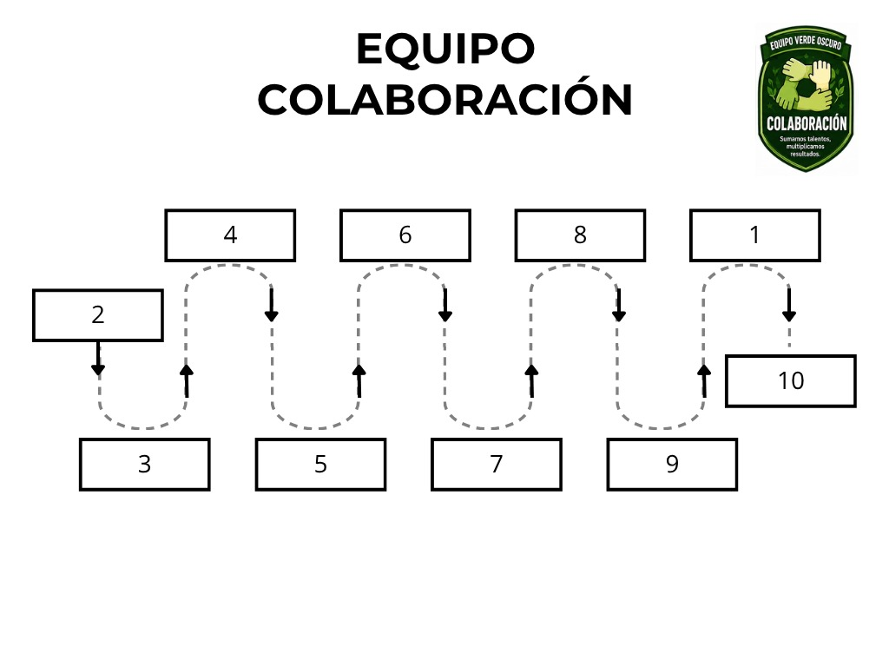

Sumen los talentos de cada integrante: cada uno aporta algo distinto al recorrido.
Rally · Equipo Colaboración
Equipo Colaboración
Sigan el recorrido en el orden indicado, siguiendo las flechas sin saltarse ninguna etapa.
Guiamos · Inspiramos · Transformamos realidades
Ser parte del Equipo Colaboración significa sumar talentos y multiplicar resultados. Cada estación de este recorrido se resuelve mejor entre todos que en solitario.
Recomendaciones
Repartan las tareas según las fortalezas de cada quien: avanzan más rápido divididos con criterio.
Ayuden a quien se atrase: el equipo avanza a paso de todos, no de unos pocos.
Trabajen juntos, no en paralelo: la colaboración multiplica lo que lograrían por separado.

🔍 Toca la imagen para ampliarla
REFERENCIAS DE UBICACIÓN
- Ascensor lado cafetería
- Caminos del jardín
- Graderías
- Estacionamiento
- Cancha Norte
- Frontis cafetería
- Lado oficina pregado
- Cancha Centro
- Cancha Sur
- Plazoleta
💡 Tip: respeten el orden de las estaciones tal
como marcan las flechas del mapa.
🏁 Recuerda: los equipos no compiten entre sí, cada equipo
compite contra el tiempo.